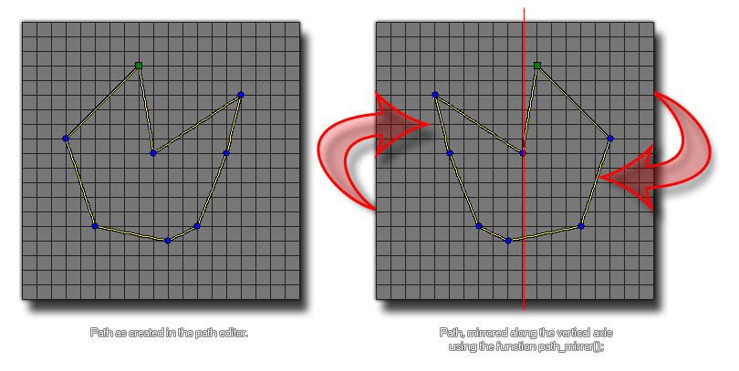

path_mirror
Flips the given path along the vertical axis with respect to its center.
Syntax :
path_mirror(index);
| Argument | Description |
|---|---|
| index | The index of the path to mirror. |
Returns : N/A
Description
This function takes all the path points and mirrors them along the vertical axis. This function changes the actual path resource, and so will permanently affect how the path is used by all instances
in the game from the moment the function is used until the end of the game.

Example :
path_mirror(mypath);
This would mirror "mypath" along the vertical axis.
Back : Changing Paths
Next : path_reverse